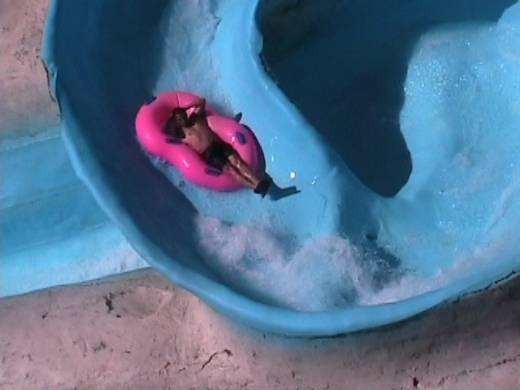
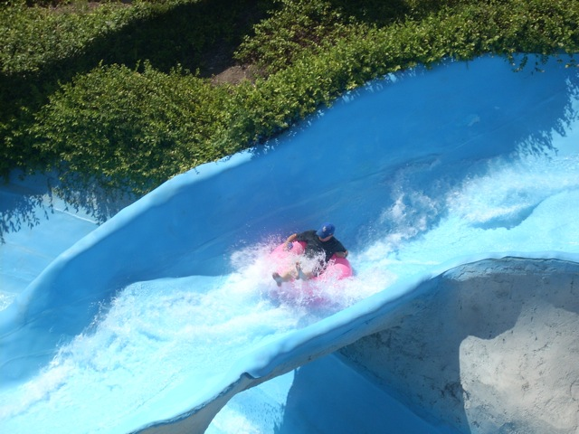

| |

Congo River Rapids Review
For this review, we're going to travel back in time to 2011, which was my last visit to Wild Rivers. For this Wild Rivers Review, we'll be reveiwing Congo River Rapids. While the ride wasn't a typical staple waterslide like a Tornado Clone or a Speed Slide, but it wasn't the only one of it's type. They've still got something similar at Schlitterbahn. Hell, Raging Waters used to have a similar slide just like it!!! Unfortunetly, they tore that down for a crappy Bamboo Racer Style Slide. Anyways, once you get your tube, you get in line and get up to the station. The station is pretty cool as it is supposed to represent a dragon head or something like that. Anyways, you choose your side and we're off. First off is a small gradual hill. But then you head straight for this really sharp Wild Mouse like turn. If you know how to properly manuever it, then you will go through the rest of the course backwards, which is really freaking awesome!!! Then you go through some more hills and turns, which are made even more fun as you can't see then coming when your going backwards. Then suddenly, you're rapidly accelerating and swaying from side to side. It turns out we are heading down the final drop (Although if you ride foreward, you will see it coming and it won't shock you). Then after that drop, you go through a turn and head straight down into the pool. A word of caution though. It is wise to hold onto the handles for this part because if you don't, your ride can get a little more wild than intended. When we rode in 2009, we didn't hold onto the handles and I ended up falling off the tube at this turn, kicked Cody in the face and scratched my back. But then again, in 2010, we were holding onto the handles and the raft simply flipped over and we ended up riding the rest of the way as a body slide. So really, it didn't matter if you hold on or not. You got your ass kicked either way. This was a TOTALLY AWESOME slide and I would TOTALLY would've recommended riding this if Wild Rivers was still open. I want to go to Schlitterbahn now to ride their version.
9/10
Location: Wild Rivers
Opened: I honestly don't know
Built by: I honestly don't know.
Last Ridden: July 18, 2011
Congo River Rapids Photos







|